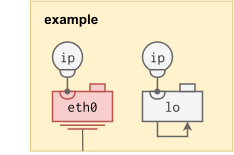

Infix aims to support all Linux Networking constructs. The YANG models used to describe the system are chosen to fit well and leverage the underlying Linux kernel’s capabilities. The ietf-interfaces.yang model forms the base, extended with ietf-ip.yang and other layer-3 IETF models. The layer-2 bridge and aggregate models are defined by Infix to exploit the unique features not available in IEEE models.
Note: when issuing
leaveto activate your changes, remember to also save your settings,copy running-config startup-config. See the CLI Introduction for a background.
| Type | Yang Model | Description |
|---|---|---|
| bridge | infix-if-bridge | SW implementation of an IEEE 802.1Q bridge |
| ip | ietf-ip, infix-ip | IP address to the subordinate interface |
| vlan | infix-if-vlan | Capture all traffic belonging to a specific 802.1Q VID |
| lag1 | infix-if-lag | Bonds multiple interfaces into one, creating a link aggregate |
| lo | ietf-interfaces | Software loopback interface |
| eth | ietf-interfaces | Physical Ethernet device/port |
| veth | infix-if-veth | Virtual Ethernet pair, typically one end is in a container |
The blocks you choose, and how you connect them, defines your data plane. Here we see an example of how to bridge a virtual port with a physical LAN.

Depending on the (optional) VLAN filtering of the bridge, the container may have full or limited connectivity with outside ports, as well as the internal CPU.
In fact the virtual port connected to the bridge can be member of several VLANs, with each VLAN being an interface with an IP address inside the container.
Thanks to Linux, and technologies like switchdev, that allow you to split a switching fabric into unique (isolated) ports, the full separation and virtualization of all Ethernet layer properties are possible to share with a container. Meaning, all the building blocks used on the left hand side can also be used freely on the right hand side as well.
This is the most central part of the system. A bridge is a switch, and a switch is a bridge. In Linux, setting up a bridge with ports connected to physical switch fabric, means you manage the actual switch fabric!
In Infix ports are by default not switch ports, unless the customer specific factory config sets it up this way. To enable switching between ports you create a bridge and then add ports to that bridge. That’s it.
admin@example:/> configure
admin@example:/config/> edit interface br0
admin@example:/config/interface/br0/> up
admin@example:/config/> set interface eth0 bridge-port bridge br0
admin@example:/config/> set interface eth1 bridge-port bridge br0
admin@example:/config/> leave
Here we add two ports to bridge br0: eth0 and eth1.
Note: Infix has many built-in helpers controlled by convention. E.g., if you name your bridge
brN, whereNis a number, Infix sets the interface type automatically and unlocks all bridge features. Other “magic” names areethN.Mfor VLAN M on top ofethN, ordockerNto create an IP masquerading container bridge.
By default bridges in Linux do not filter based on VLAN tags. It can be enabled in Infix when creating a bridge by adding a port to a VLAN as a tagged or untagged member. Use the port default VID (PVID) setting to control VLAN association for traffic ingressing a port untagged (default PVID: 1).
admin@example:/config/> edit interface br0
admin@example:/config/interface/br0/> up
admin@example:/config/> set interface eth0 bridge-port bridge br0
admin@example:/config/> set interface eth0 bridge-port pvid 10
admin@example:/config interface eth1 bridge-port bridge br0
admin@example:/config/> set interface eth1 bridge-port pvid 20
admin@example:/config/> edit interface br0
admin@example:/config/interface/br0/> set bridge vlans vlan 10 untagged eth0
admin@example:/config/interface/br0/> set bridge vlans vlan 20 untagged eth1
This sets eth0 as an untagged member of VLAN 10 and eth1 as an
untagged member of VLAN 20. Switching between these ports is thus
prohibited.
To terminate a VLAN in the switch itself, either for switch management or for routing, the bridge must become a (tagged) member of the VLAN.
admin@example:/config/interface/br0/> set bridge vlans vlan 10 tagged br0
admin@example:/config/interface/br0/> set bridge vlans vlan 20 tagged br0
To route or to manage via a VLAN, a VLAN interface needs to be created on top of the bridge, see section VLAN Interfaces below for more on this topic.
Multicast filtering in the bridge is handled by the bridge itself. It can filter both IP multicast and MAC multicast. For IP multicast it also supports “snooping”, i.e., IGMP and MLD, to automatically reduce the broadcast effects of multicast. See the next section for a summary of the terminology used.
Note: currently there is no way to just enable multicast filtering without also enabling snooping. This may change in the future, in which case a
filteringenabled setting will be made available along with the existingsnoopingsetting.
When creating your bridge you must decide if you need a VLAN filtering bridge or a plain bridge (see previous section). Multicast filtering is supported for either, but take note that it must be enabled and set up per VLAN when VLAN filtering is enabled – there are no global multicast settings in this operating mode.
In the following example we have a regular 8-port bridge without VLAN filtering. We focus on the multicast specific settings:
admin@example:/> configure
admin@example:/config/> edit interface br0
admin@example:/config/interface/br0/> set bridge multicast snooping
admin@example:/config/interface/br0/> set ipv4 address 192.168.2.1 prefix-length 24
admin@example:/config/interface/br0/> leave
admin@example:/> copy running-config startup-config
Here we enable snooping and set a static IPv4 address so that the switch can take part in IGMP querier elections. (MLD querier election currently not supported.) We can inspect the current state:
admin@example:/> show ip multicast
Multicast Overview
Query Interval (default): 125 sec
Router Timeout : 255
Fast Leave Ports :
Router Ports :
Flood Ports : e0, e1, e2, e3, e4, e5, e6, e7
Interface VID Querier State Interval Timeout Ver
br0 192.168.2.1 Up 125 None 3
Bridge VID Multicast Group Ports
br0 224.1.1.1 e3, e2
br0 ff02::6a br0
It is a small LAN, so our bridge has already become the elected IGMP
querier. We see it is ours because the timeout is None, and we
recognize our IP address. We can also see two ports that have joined
the same IPv4 multicast group, 224.1.1.1, and one join from Infix itself
for the IPv6 group ff02::6a.
Now, let’s see what happens when we add another bridge, with VLAN
filtering enabled. We skip the boring parts about how to move ports
e4-e7 to br1 and assign them to VLANs, and again, focus on the
multicast bits only:
admin@example:/> configure
admin@example:/config/> edit interface br1
admin@example:/config/interface/br1/> set bridge vlans vlan 1 multicast snooping
admin@example:/config/interface/br1/> set bridge vlans vlan 2 multicast snooping
admin@example:/config/interface/br1/> leave
admin@example:/> copy running-config startup-config
Let’s see what we get:
admin@example:/> show ip multicast
Multicast Overview
Query Interval (default): 125 sec
Router Timeout : 255
Fast Leave Ports : e5
Router Ports : e1, e2, e5, e6, e7
Flood Ports : e1, e2, e3, e4, e5, e6, e7, e8
Interface VID Querier State Interval Timeout Ver
br0 192.168.2.1 Up 125 None 3
br1 1 0.0.0.0 Up 125 None 3
br1 2 0.0.0.0 Up 125 None 3
Bridge VID Multicast Group Ports
br0 224.1.1.1 e2
br0 ff02::fb br0
br0 ff02::6a br0
br0 ff02::1:ff00:0 br0
br1 1 224.1.1.1 e5
br1 2 224.1.1.1 e7
br1 1 ff02::fb br1
br1 1 ff02::1:ff00:0 br1
In this setup we have a lot more going on. Multiple multicast router ports have been detected, and behind the scenes someone has also added an IGMP/MLD fast-leave port.
Note: the reason why multicast flooding is enabled by default is to ensure safe co-existence with MAC multicast, which is very common in industrial networks. It also allows end devices that do not know of IGMP/MLD to communicate over multicast as long as the group they have chosen is not used by other IGMP/MLD aware devices on the LAN.
As soon as an IGMP/MLD membership report to “join” a group is received the group is added to the MDB and forwarding to other ports stop. The only exception to this rule is multicast router ports.
Creating a VLAN can be done in many ways. This section assumes VLAN interfaces created atop another Linux interface. E.g., the VLAN interfaces created on top of the Ethernet interface or bridge in the picture below.

A VLAN interface is basically a filtering abstraction. When you run
tcpdump on a VLAN interface you will only see the frames matching the
VLAN ID of the interface, compared to all the VLAN IDs if you run
tcpdump on the lower-layer interface.
admin@example:/> configure
admin@example:/config/> edit interface eth0.20
admin@example:/config/interface/eth0.20/> show
type vlan;
vlan {
tag-type c-vlan;
id 20;
lower-layer-if eth0;
}
admin@example:/config/interface/eth0.20/> leave
The example below assumes bridge br0 is already created, see VLAN Filtering Bridge.
admin@example:/> configure
admin@example:/config/> edit interface vlan10
admin@example:/config/interface/vlan10/> set vlan id 10
admin@example:/config/interface/vlan10/> set vlan lower-layer-if br0
admin@example:/config/interface/vlan10/> leave
As conventions, a VLAN interface for VID 20 on top of an Ethernet interface eth0 is named eth0.20, and a VLAN interface for VID 10 on top of a bridge interface br0 is named vlan10.
Note: If you name your VLAN interface
foo0.NorvlanN, whereNis a number, Infix will set the interface type automatically for you.
A Virtual Ethernet (VETH) pair is basically a virtual Ethernet cable. A cable can be “plugged in” to a bridge and the other end can be given to a container, or plugged into another bridge.
The latter example is useful if you have multiple bridges in the system with different properties (VLAN filtering, IEEE group forwarding, etc.), but still want some way of communicating between these domains.
admin@example:/> configure
admin@example:/config/> edit interface veth0a
admin@example:/config/interface/veth0a/> set veth peer veth0b
admin@example:/config/interface/veth0a/> end
admin@example:/config/> diff
interfaces {
+ interface veth0a {
+ type veth;
+ veth {
+ peer veth0b;
+ }
+ }
+ interface veth0b {
+ type veth;
+ veth {
+ peer veth0a;
+ }
+ }
}
admin@example:/config/>
Note: this is another example of the automatic inference of the interface type from the name. Any name can be used, but then you have to set the interface type to
vethmanually.
This section details IP Addresses And Other Per-Interface IP settings.
Infix support several network interface types, each can be assigned one or more IP addresses, both IPv4 and IPv6 are supported.

Multiple address assignment methods are available:
| Type | Yang Model | Description |
|---|---|---|
| static | ietf-ip | Static assignment of IPv4 address, e.g., 10.0.1.1/24 |
| link-local | infix-ip | Auto-assignment of IPv4 address in 169.254.x.x/16 range |
| dhcp | infix-dhcp-client | Assignment of IPv4 address by DHCP server, e.g., 10.0.1.1/24 |
Supported DHCP (request) options, configurability (Cfg) and defaults,
are listed below. Configurable options can be disabled on a per client
interface basis, some options, like clientid and option 81, are
possible to set the value of as well.
| Opt | Name | Cfg | Description |
|---|---|---|---|
| 1 | subnet |
No | Request IP address and netmask |
| 3 | router |
Yes | Default route(s), see also option 121 and 249 |
| 6 | dns |
Yes | DNS server(s), static ones take precedence |
| 12 | hostname |
Yes | DHCP cannot set hostname, only for informing server |
| 15 | domain |
Yes | Default domain name, for name resolution |
| 28 | broadcast |
Yes | Broadcast address, calculated if disabled |
| 42 | ntpsrv |
Yes | NTP server(s), static ones take precedence |
| 50 | address |
Yes | Request (previously cached) address |
| 61 | clientid |
Yes | Default MAC address (and option 12) |
| 81 | fqdn |
Yes | Similar to option 12, request FQDN update in DNS |
| 119 | search |
Yes | Request domain search list |
| 121 | staticroutes |
Yes | Classless static routes |
| 249 | msstaticroutes |
Yes | Microsoft static route |
Default: router, dns, domain, broadcast, ntpsrv, search,
address, staticroutes, msstaticroutes
Note: DHCP address method is only available for LAN interfaces (Ethernet, virtual Ethernet (veth), bridge, link aggregates, etc.)
Multiple address assignment methods are available:
| Type | Yang Model | Description |
|---|---|---|
| static | ietf-ip | Static assignment of IPv6 address, e.g., 2001:db8:0:1::1/64 |
| link-local | ietf-ip3 | (RFC4862) Auto-configured link-local IPv6 address (fe80::0 prefix + interface identifier, e.g., fe80::ccd2:82ff:fe52:728b/64) |
| global auto-conf | ietf-ip | (RFC4862) Auto-configured (stateless) global IPv6 address (prefix from router + interface identifier, e.g., 2001:db8:0:1:ccd2:82ff:fe52:728b/64 |
Both for link-local and global auto-configuration, it is possible to auto-configure using a random suffix instead of the interface identifier.

admin@example:/> show interfaces
INTERFACE PROTOCOL STATE DATA
eth0 ethernet UP 02:00:00:00:00:00
ipv6 fe80::ff:fe00:0/64 (link-layer)
lo ethernet UP 00:00:00:00:00:00
ipv4 127.0.0.1/8 (static)
ipv6 ::1/128 (static)
admin@example:/>
To illustrate IP address configuration, the examples below uses a switch with a single Ethernet interface (eth0) and a loopback interface (lo). As shown above, these examples assume eth0 has an IPv6 link-local address and lo has static IPv4 and IPv6 addresses by default.

admin@example:/> configure
admin@example:/config/> edit interface eth0 ipv4
admin@example:/config/interface/eth0/ipv4/> set address 10.0.1.1 prefix-length 24
admin@example:/config/interface/eth0/ipv4/> set autoconf enabled true
admin@example:/config/interface/eth0/ipv4/> diff
+interfaces {
+ interface eth0 {
+ ipv4 {
+ address 10.0.1.1 {
+ prefix-length 24;
+ }
+ autoconf {
+ enabled true;
+ }
+ }
+ }
+}
admin@example:/config/interface/eth0/ipv4/> leave
admin@example:/> show interfaces
INTERFACE PROTOCOL STATE DATA
eth0 ethernet UP 02:00:00:00:00:00
ipv4 169.254.1.3/16 (random)
ipv4 10.0.1.1/24 (static)
ipv6 fe80::ff:fe00:0/64 (link-layer)
lo ethernet UP 00:00:00:00:00:00
ipv4 127.0.0.1/8 (static)
ipv6 ::1/128 (static)
admin@example:/>
As shown, the link-local IPv4 address is configured with set autconf
enabled true. The resulting address (169.254.1.3/16) is of type
random (ietf-ip.yang).

admin@example:/> configure
admin@example:/config/> edit dhcp-client
admin@example:/config/dhcp-client/> set client-if eth0
admin@example:/config/dhcp-client/> set enabled true
admin@example:/config/dhcp-client/> leave
admin@example:/> show interfaces
INTERFACE PROTOCOL STATE DATA
eth0 ethernet UP 02:00:00:00:00:00
ipv4 10.1.2.100/24 (dhcp)
ipv6 fe80::ff:fe00:0/64 (link-layer)
lo ethernet UP 00:00:00:00:00:00
ipv4 127.0.0.1/8 (static)
ipv6 ::1/128 (static)
admin@example:/>
The resulting address (10.1.2.100/24) is of type dhcp.
The (only) way to disable IPv6 link-local addresses is by disabling IPv6 on the interface.
admin@example:/> configure
admin@example:/config/> edit interface eth0 ipv6
admin@example:/config/interface/eth0/ipv6/> set enabled false
admin@example:/config/interface/eth0/ipv6/> leave
admin@example:/> show interfaces
INTERFACE PROTOCOL STATE DATA
eth0 ethernet UP 02:00:00:00:00:00
lo ethernet UP 00:00:00:00:00:00
ipv4 127.0.0.1/8 (static)
ipv6 ::1/128 (static)
admin@example:/>

admin@example:/> configure
admin@example:/config/> edit interface eth0 ipv6
admin@example:/config/interface/eth0/ipv6/> set address 2001:db8::1 prefix-length 64
admin@example:/config/interface/eth0/ipv6/> leave
admin@example:/> show interfaces
INTERFACE PROTOCOL STATE DATA
eth0 ethernet UP 02:00:00:00:00:00
ipv6 2001:db8::1/64 (static)
ipv6 fe80::ff:fe00:0/64 (link-layer)
lo ethernet UP 00:00:00:00:00:00
ipv4 127.0.0.1/8 (static)
ipv6 ::1/128 (static)
admin@example:/>

Stateless address auto-configuration of global addresses is enabled by default. The address is formed by concatenating the network prefix advertised by the router (here 2001:db8:0:1::0/64) and the interface identifier. The resulting address is of type link-layer, as it is formed based on the interface identifier (ietf-ip.yang).
admin@example:/> show interfaces
INTERFACE PROTOCOL STATE DATA
eth0 ethernet UP 02:00:00:00:00:00
ipv6 2001:db8:0:1:0:ff:fe00:0/64 (link-layer)
ipv6 fe80::ff:fe00:0/64 (link-layer)
lo ethernet UP 00:00:00:00:00:00
ipv4 127.0.0.1/8 (static)
ipv6 ::1/128 (static)
admin@example:/>
Disabling auto-configuration of global IPv6 addresses can be done as shown below.
admin@example:/> configure
admin@example:/config/> edit interface eth0 ipv6
admin@example:/config/interface/eth0/ipv6/> set autoconf create-global-addresses false
admin@example:/config/interface/eth0/ipv6/> leave
admin@example:/> show interfaces
INTERFACE PROTOCOL STATE DATA
eth0 ethernet UP 02:00:00:00:00:00
ipv6 fe80::ff:fe00:0/64 (link-layer)
lo ethernet UP 00:00:00:00:00:00
ipv4 127.0.0.1/8 (static)
ipv6 ::1/128 (static)
admin@example:/>
By default, the auto-configured link-local and global IPv6 addresses are formed from a link-identifier based on the MAC address.
admin@example:/> show interfaces
INTERFACE PROTOCOL STATE DATA
eth0 ethernet UP 02:00:00:00:00:00
ipv6 2001:db8:0:1:0:ff:fe00:0/64 (link-layer)
ipv6 fe80::ff:fe00:0/64 (link-layer)
lo ethernet UP 00:00:00:00:00:00
ipv4 127.0.0.1/8 (static)
ipv6 ::1/128 (static)
admin@example:/>
To avoid revealing identity information in the IPv6 address, it is possible to specify use of a random identifier (ietf-ip.yang and RFC8981).
admin@example:/> configure
admin@example:/config/> edit interface eth0 ipv6
admin@example:/config/interface/eth0/ipv6/> set autoconf create-temporary-addresses true
admin@example:/config/interface/eth0/ipv6/> leave
admin@example:/> show interfaces
INTERFACE PROTOCOL STATE DATA
eth0 ethernet UP 02:00:00:00:00:00
ipv6 2001:db8:0:1:b705:8374:638e:74a8/64 (random)
ipv6 fe80::ad3d:b274:885a:9ffb/64 (random)
lo ethernet UP 00:00:00:00:00:00
ipv4 127.0.0.1/8 (static)
ipv6 ::1/128 (static)
admin@example:/>
Both the link-local address (fe80::) and the global address (2001:) have changed type to random.
To be able to route (static or dynamic) on the interface it is
required to enable forwarding. This setting controlls if packets
received on this interface can be forwarded.
admin@example:/config/> edit interface eth0
admin@example:/config/interface/eth0/> set ipv4 forwarding
admin@example:/config/interface/eth0/> leave
admin@example:/>
This flag behaves totally different than for IPv4. For IPv6 the ability to route between interfaces is always enabled, instead this flag controls if the interface will be in host/router mode.
| Feature | Forward enabled | Forward disabled |
|---|---|---|
| IsRouter set in Neighbour Advertisements. | Yes | No |
| Transmit Router Solicitations. | No | Yes |
| Router Advertisements are ignored | No | Yes |
| Accept Redirects | No | Yes |
admin@example:/config/> edit interface eth0
admin@example:/config/interface/eth0/> set ipv6 forwarding
admin@example:/config/interface/eth0/> leave
admin@example:/>
| Yang Model | Description |
|---|---|
| ietf-routing | Base model, used to set configuration and read operational status in the other models |
| ietf-ipv4-unicast-routing | Static IPv4 unicast routing |
| ietf-ipv6-unicast-routing | Static IPv6 unicast routing |
| ietf-ospf | OSPF routing |
| infix-routing | Infix deviations |
Remember to enable IPv4 forwarding for the interfaces.
admin@example:/> configure
admin@example:/config/> edit routing control-plane-protocol static name default
admin@example:/config/routing/control-plane-protocol/static/name/default/> set ipv4 route 192.168.200.0/24 next-hop next-hop-address 192.168.1.1
admin@example:/config/routing/control-plane-protocol/static/name/default/> leave
admin@example:/>
Note: You can only have one instance per routing protocol.
admin@example:/> configure
admin@example:/config/> edit routing control-plane-protocol static name default
admin@example:/config/routing/control-plane-protocol/static/name/default/> set ipv6 route 2001:db8:3c4d:200::/64 next-hop next-hop-address 2001:db8:3c4d:1::1
admin@example:/config/routing/control-plane-protocol/static/name/default/> leave
admin@example:/>
Note: You can only have one instance per routing protocol.
Infix supports OSPF dynamic routing for IPv4, i.e., OSPFv2. Remember to enable IPv4 forwarding for the interfaces you want to run OSPFv2.
admin@example:/config/> edit routing control-plane-protocol ospfv2 name default
admin@example:/config/routing/control-plane-protocol/ospfv2/name/default/> set ospf area 0.0.0.0 interface e0 enabled true
admin@example:/config/routing/control-plane-protocol/ospfv2/name/default/> leave
admin@example:/>
Note: You can only have one instance per routing protocol.
In addition to regular OSPF areas, area types NSSA and Stub are supported.
To configure a NSSA area with summary routes:
admin@example:/config/> edit routing control-plane-protocol ospfv2 name default
admin@example:/config/routing/control-plane-protocol/ospfv2/name/default/> set ospf area 0.0.0.1 area-type nssa-area
admin@example:/config/routing/control-plane-protocol/ospfv2/name/default/> set ospf area 0.0.0.1 summary true
admin@example:/config/routing/control-plane-protocol/ospfv2/name/default/> leave
admin@example:/>
It is possible to enable BFD per interface to speed up detection of link loss.
admin@example:/config/> edit routing control-plane-protocol ospfv2 name default
admin@example:/config/routing/control-plane-protocol/ospfv2/name/default/ospf/> set area 0.0.0.0 interface e0 bfd enabled true
admin@example:/config/routing/control-plane-protocol/ospfv2/name/default/> leave
admin@example:/>
We have already seen how to enable OSPF per interface (enabled true)
and BFD for OSPF per interface (bfd enabled true). These and other
OSPF interface settings are done in context of an OSFP area, e.g.,
area 0.0.0.0. Available commands can be listed using the ? mark.
admin@example:/config/routing/control-plane-protocol/ospfv2/name/default/> edit ospf area 0.0.0.0
admin@example:/config/routing/control-plane-protocol/ospfv2/name/default/ospf/area/0.0.0.0/> edit interface e0
admin@example:/config/routing/control-plane-protocol/ospfv2/name/default/ospf/area/0.0.0.0/interface/e0/> set ?
bfd BFD interface configuration.
cost Interface's cost.
dead-interval Interval after which a neighbor is declared down
enabled Enables/disables the OSPF protocol on the interface.
hello-interval Interval between Hello packets (seconds). It must
interface-type Interface type.
passive Enables/disables a passive interface. A passive
retransmit-interval Interval between retransmitting unacknowledged Link
transmit-delay Estimated time needed to transmit Link State Update
admin@example:/config/routing/control-plane-protocol/ospfv2/name/default/ospf/area/0.0.0.0/interface/e0/> set
For example, setting the OSPF interface type to point-to-point for an Ethernet interface can be done as follows.
admin@example:/config/routing/control-plane-protocol/ospfv2/name/default/ospf/area/0.0.0.0/interface/e0/> set interface-type point-to-point
admin@example:/config/routing/control-plane-protocol/ospfv2/name/default/ospf/area/0.0.0.0/interface/e0/>
Using NETCONF and the YANG model ietf-routing it is possible to read
the OSPF routing table, neighbors and more, that may be useful for
debugging the OSPFv2 setup. The CLI has various OSPF status commands
such as show ospf neighbor, show ospf interface and show ospf
routes.
admin@example:/> show ospf neighbor
Neighbor ID Pri State Up Time Dead Time Address Interface RXmtL RqstL DBsmL
10.1.1.2 1 Full/- 3h46m59s 30.177s 10.1.1.2 e0:10.1.1.1 0 0 0
10.1.1.3 1 Full/- 3h46m55s 34.665s 10.1.1.3 e1:10.1.1.1 0 0 0
admin@example:/>
The routing table can be viewed from the operational datastore over NETCONF or using the CLI:
admin@example:/> show routes ipv4
PREFIX NEXT-HOP PREF PROTOCOL
192.168.1.0/24 e0 kernel
192.168.200.0/24 192.168.1.1 20 static
admin@example:/>
admin@example:/> show routes ipv6
PREFIX NEXT-HOP PREF PROTOCOL
2001:db8:3c4d:50::/64 eth4 256 kernel
fe80::/64 eth5 256 kernel
fe80::/64 eth3 256 kernel
fe80::/64 eth1 256 kernel
fe80::/64 eth0 256 kernel
fe80::/64 eth2 256 kernel
fe80::/64 eth4 256 kernel
admin@example:/>
The source protocol describes the origin of the route.
| Protocol | Description |
|---|---|
| kernel | Added when setting a subnet address on an interface |
| static | User created static routes |
| dhcp | Routes retrieved from DHCP |
| ospf | Routes retreived from OSPFv2 |
The YANG model ietf-routing support multiple ribs but only two are
currently supported, namely ipv4 and ipv6.
one IP multicast group maps to the same MAC multicast group.
Please note, link aggregates are not yet supported in Infix. ↩
For example, IPv4 groups are mapped to MAC multicast addresses by mapping the low-order 23-bits of the IP address in the low-order 23 bits of the Ethernet address 01:00:5E:00:00:00. Meaning, more than ↩
Link-local IPv6 addresses are implicitly enabled when enabling IPv6. IPv6 can be enabled/disabled per interface in the ietf-ip YANG model. ↩